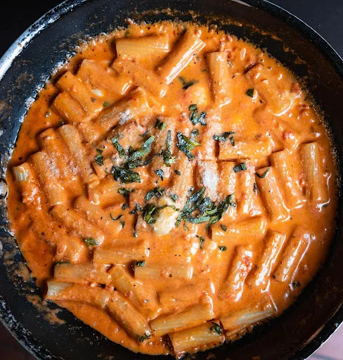

Home
Pasta

Description
This is the recipe for how I typically make my pasta at home.
Ingredients
- Rigatoni noodles
- Ground turkey
- Tomato sauce
- Alfredo sauce
- Seasonings & Cilantro
- Olive oil
Steps
- Boil a pot of water for the noodles
- In a pan add olive oil and the ground turkey
- Add seasoning as you cook the ground turkey while stirring for about 7 minutes
- Once your pot water is boiling add in the rigatoni noodles and stir every minute or so
- Drain the extra oils out of the pan
- Pour the alfredo and tomato sauce into the pan with the ground turkey
- Mix and add in more seasoning and cilantro
- After the noodles have boiled for about 8 minutes pour them out into a strainer
- Put the noodles and ground turkey together in a bowl
- Enjoy